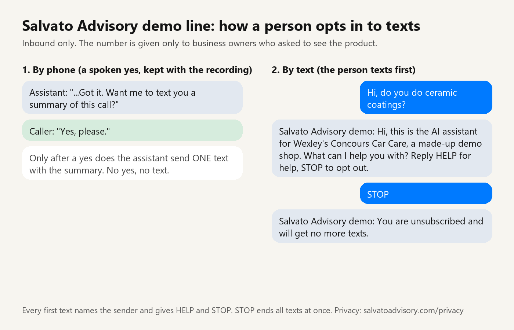

Salvato Advisory, LLC · last updated 20 November 2026
This policy covers the text messages sent from the Salvato Advisory product demo line, toll-free (855) 907-3585. It covers nothing else.
Salvato Advisory sets up and runs AI phone and text answering for small service businesses. The demo line lets business owners who asked to see the product try it. It answers as a made-up example shop, and every message says it is a Salvato Advisory demo. Messages are replies to people who contacted the line first: answers to a person's own texts, or one text with a summary of their call when they asked for it on the call. They are not marketing, not promotional, and nothing is sold in them.
Only in reply to a person who contacted the line. A conversation is usually a few messages. Frequency may vary.
No mobile information will be shared with third parties or affiliates for marketing or promotional purposes. Text messaging originator opt-in data and consent are not shared with any third parties. Mobile numbers are not sold or rented and are used only to reply to the person who contacted the line. Information may be passed to subcontractors strictly to deliver the messages: Telnyx, our messaging provider, which transmits them on our behalf and uses the number for no other purpose.
Message and data rates may apply, set by the recipient's own mobile carrier.
Reply STOP to any message to stop receiving them. Reply HELP for help.

Dave Salvato, Salvato Advisory — dave@salvatoadvisory.com · Demo Line SMS Terms and Conditions